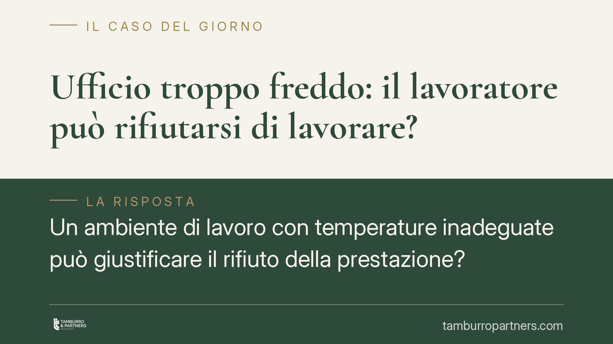

Ufficio troppo freddo: il lavoratore può rifiutarsi di lavorare?
Un ambiente di lavoro con temperature inadeguate può giustificare il rifiuto della prestazione? Il tema tocca l'obbligo di sicurezza del datore e i limiti entro cui il dipendente può sospendere l'attività. La materia è regolata da norme precise e da una giurisprudenza consolidata sulla responsabilità contrattuale del datore di lavoro. Vediamo i profili giuridici e le implicazioni pratiche per entrambe le parti.

Il quadro: l'obbligo di sicurezza del datore
Il punto di partenza è l'art. 2087 del Codice civile, che impone al datore di lavoro di adottare tutte le misure necessarie a tutelare l'integrità fisica e la personalità morale dei prestatori. È una norma di chiusura: obbliga il datore anche oltre le prescrizioni tecniche puntuali, in funzione del progresso tecnico e delle specifiche condizioni dell'attività.
Sul piano tecnico interviene il D.Lgs. 81/2008 (Testo Unico in materia di salute e sicurezza sul lavoro). L'Allegato IV, punto 1.9, disciplina il microclima dei luoghi di lavoro: la temperatura deve essere adeguata all'organismo umano durante il tempo di lavoro, tenuto conto dei metodi di lavoro e degli sforzi fisici richiesti. Il datore è inoltre tenuto a valutare i relativi rischi nel documento di valutazione dei rischi (DVR).
L'eccezione di inadempimento e i suoi limiti
Quando l'ambiente diventa concretamente nocivo, il lavoratore può invocare l'eccezione di inadempimento prevista dall'art. 1460 c.c.: in un contratto a prestazioni corrispettive, una parte può rifiutare la propria prestazione se l'altra non adempie ai propri obblighi. Poiché la sicurezza è un obbligo contrattuale del datore, il suo inadempimento può legittimare la sospensione dell'attività da parte del dipendente.
Questo strumento, però, è soggetto a un criterio di proporzionalità. Lo stesso art. 1460, secondo comma, esclude il rifiuto quando sia contrario a buona fede. Occorre quindi che l'inadempimento del datore sia grave e incida realmente sulla salute o sulla dignità del lavoratore.
Qui va tracciata una distinzione essenziale. Un rifiuto legittimo presuppone una compromissione effettiva delle condizioni di salute e sicurezza, documentabile e proporzionata. Il mero disagio soggettivo, invece, non integra un inadempimento datoriale rilevante e non giustifica la sospensione della prestazione. La differenza tra i due scenari è decisiva sul piano delle conseguenze disciplinari.
L'onere della prova
Sul profilo probatorio, la giurisprudenza di legittimità è costante nel qualificare la responsabilità ex art. 2087 c.c. come responsabilità contrattuale. Ne discende, secondo i principi in tema di inadempimento delle obbligazioni, che grava sul datore l'onere di provare di aver adottato tutte le misure idonee a garantire la salubrità dei locali. Il lavoratore deve allegare il danno o il rischio e il nesso con l'ambiente di lavoro; spetta poi al datore dimostrare l'adempimento diligente.
*Nota: circolano riferimenti a un'ordinanza della Corte di Cassazione (n. 3145/2026) che affermerebbe la nullità del licenziamento ritorsivo intimato al lavoratore che rifiuti di operare in ambienti nocivi. L'esistenza e gli estremi di tale pronuncia sono da verificare presso le fonti ufficiali prima di ogni uso argomentativo: i principi qui esposti si fondano comunque su giurisprudenza consolidata sull'art. 2087 c.c.*
Implicazioni pratiche
Per il lavoratore. Il rifiuto della prestazione non è mai automatico. Deve fondarsi su una situazione realmente compromessa e non su un fastidio momentaneo. Un rifiuto sproporzionato o pretestuoso può esporre a contestazioni disciplinari e, nei casi più gravi, al licenziamento. Diverso è il caso del licenziamento ritorsivo, adottato per reagire a una legittima tutela della salute: se provato il motivo illecito determinante, la sanzione è colpita da nullità.
Per il datore. L'onere probatorio è a suo carico. Ciò significa che l'assenza di rilevazioni, di manutenzione documentata degli impianti e di aggiornamento del DVR indebolisce sensibilmente la sua posizione in giudizio. La tracciabilità delle misure adottate diventa il vero fattore difensivo.
Cosa fare in concreto
- È opportuno che il lavoratore documenti per iscritto le condizioni ambientali segnalate, indicando date e circostanze.
- La segnalazione al datore, al preposto o al RLS (Rappresentante dei Lavoratori per la Sicurezza) andrebbe formalizzata in modo tracciabile.
- Il datore dovrebbe mantenere aggiornata la valutazione dei rischi microclimatici e conservare le certificazioni degli impianti.
- Prima di sospendere la prestazione, è prudente valutare la proporzionalità del rifiuto rispetto alla reale gravità della situazione.
- In presenza di contestazioni disciplinari o di provvedimenti espulsivi, è consigliabile acquisire un parere legale qualificato per verificare la legittimità dell'operato di entrambe le parti.
Disclaimer
Contributo informativo a cura di Tamburro & Partners - Avv. Giuseppe Tamburro. Non costituisce parere legale.
Ogni storia di lavoro ha i suoi tempi.
Se gestisci HR e vuoi un confronto su contenzioso, ispezioni o licenziamenti, scrivi allo studio. Ti rispondiamo entro un giorno lavorativo.